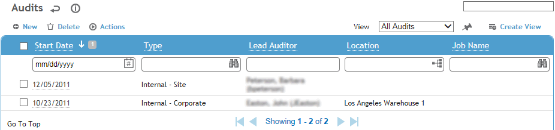
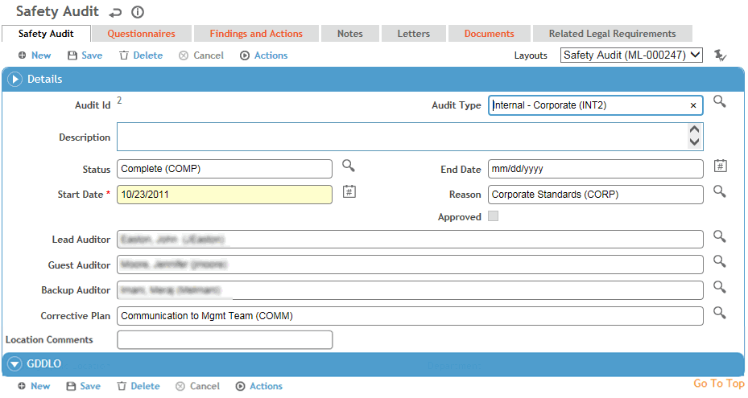

In the Safety, Ergonomics, Environmental or Quality menu, click Audits.

To create an audit that is very similar to an existing one, select the audit and choose Actions»Clone Audit. A new record is created with the Details section from the original audit (except Audit ID and Auditor fields) as well as the lists of associated questionnaires, legal requirements and permits. Open the new record to complete or change information as required.
Click a link to edit an existing audit, or click New.

On the main tab, enter the following information:
the Audit Type (e.g. External-Regulatory, Internal-Corporate, Compliance, etc.) and the Reason for the audit (e.g. planned, issue, random, regulatory, voluntary request)
the audit Start Date and Status (e.g. schedule, open, closed)
the names of the Lead Auditor, Guest Auditor (secondary auditor), and Backup Auditor (backup in case Lead and/or Guest cannot participate). Record any additional auditors on the Auditors tab.
after the audit has been completed, you can select a Corrective Plan that contains actions that would be added to the Findings and Actions tab. For example, a ladder safety plan might include actions to improve maintenance and equipment material, and to establish policy/regulations.
the geographic identifiers for the location being audited, and the job name if applicable.
For Ergonomic audits, you can also capture employee data (Employee, Reassessment Date, Risk, Supervisor, Job Position, Job Type, Job Position Group, and Shift Code). If you select an Employee, the GDDLO fields will be populated based on the specified employee.
For Quality audits, you can also capture the Purpose, Audit Scope, Executive Summary, and Scheduled Start and End Dates. These fields may be added to custom layouts of other types of audit.
Click Save.
The Questionnaires tab allows you to associate questionnaires with an audit. The tab may include default questionnaires based on the selected audit Type.
If you have appropriate permissions, you may be able to change the GDDLOFB to match your current location. However, if a questionnaire response results in the creation of a findings and actions record, the new record will inherit the original GDDLOFB values, not the edited values. For information about creating and administering questionnaires, see Questionnaires.
The Findings and Actions tab displays all findings and actions recommended (or required) as a result of this audit. The Approved checkbox will be unavailable until all actions are closed.
For information about recording a finding and its actions, see Recording a New Finding.
To view an action’s attachment, open the finding and choose Actions»Open Document.
The Letters tab allows you to view past letters or generate new letters to employees. Form letters are stored in the LettersTemplate look-up table. For information about creating letters, see Generating a Letter.
The Notes tab allows you to record additional information that does not fit elsewhere in the form. The Note Type allows you to group notes captured at different stages, e.g. pre-audit, audit, or post-audit. For more information, see Adding Notes to a Form.
The Documents tab allows you to link a file containing background or supporting information to a record for easy access to the file. For more information, see Linking or Importing a Document.
An icon on the Audit tab allows you to quickly add a document file. The icon turns into a preview thumbnail; if the file is an image, hovering over the thumbnail will display the full-size image. The document will also be listed on the Documents tab where it can be removed if necessary.
The Related Legal Requirements tab allows you to record any related legal requirements and permits that apply to this audit.
The Related Event Reports tab shows all event reports that have been posted to this audit. For more information, see Working with Event Reports.
If you have appropriate permission, you may delete a related event. This does not delete the related event, but only detaches it from the current audit. Detached event reports will remain in the Event Reporting Inbox.
The Auditors tab allows you to assign more auditors in addition to those listed on the Audit tab. With appropriate permissions, the auditors listed on this tab can access the audit record regardless of their site security restrictions or the GDDLOFB of the record.
A user who has permission to bypass site security on audits will gain access to that audit as well as any other audit with the same GDDLOFB. If you need to prevent such users from accessing certain audit records, you should create custom views and use the prohibit functionality in role security (see Creating a New View” or Setting Up Roles).
The Forms tab displays all forms in the PDFForm look-up table that have been linked to audits. Open and complete these as required.
The Related Assets tab allows you to track and report on the assets evaluated or used as part of the audit.
Quality Audits only: Use the Auditees tab to associate one or more employees with the audit, or use the Audited Products tab to associate any of your suppliers’ products to the audit.
When all actions are complete and post audit notes have been documented (or according to your internal policies), select Approved on the Audit tab. Once the audit has been approved it is locked and no further edits are possible; however, depending on your role permissions, you may be able to unapprove the audit (Actions»Unapprove) in order to make changes.
The user role that is allowed to approve audit records is defined in the system settings. For more information, see Changing Your System Settings.